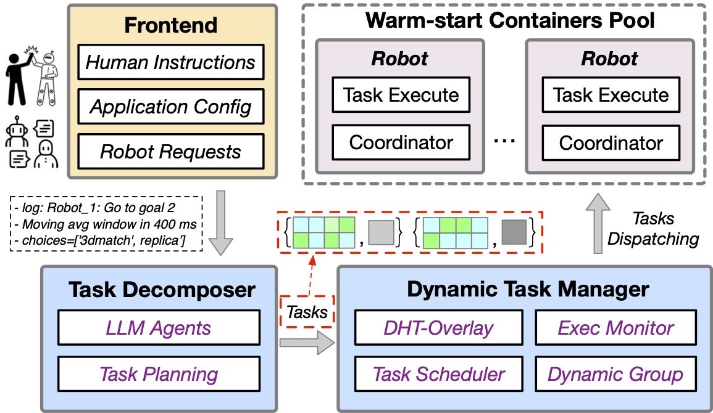
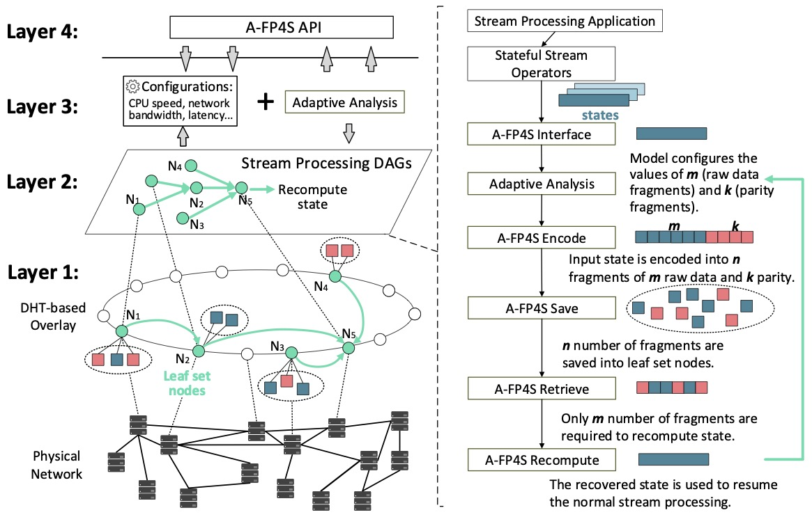
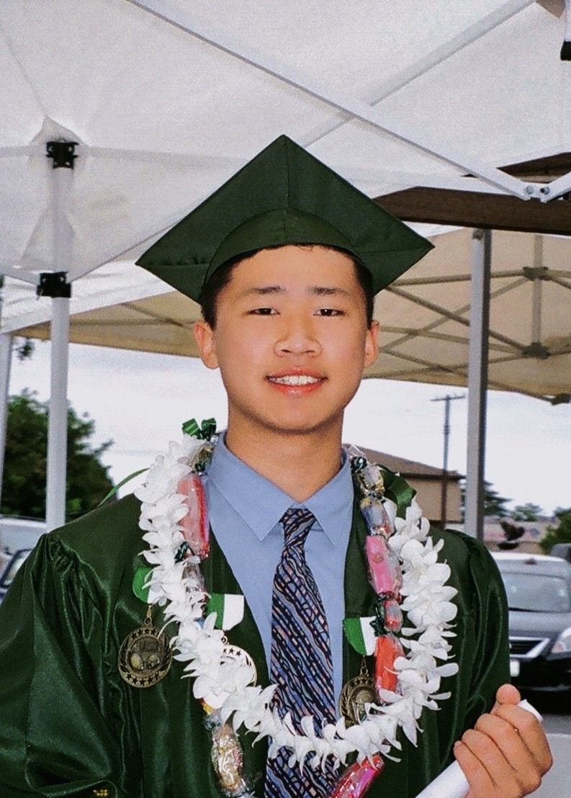
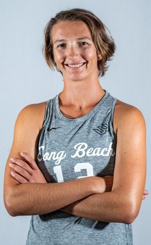
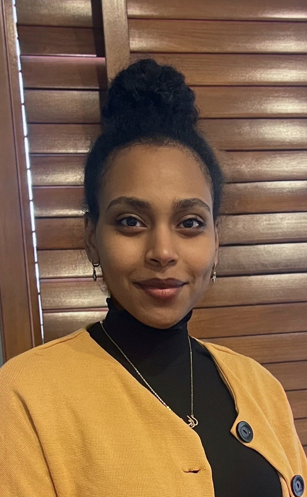
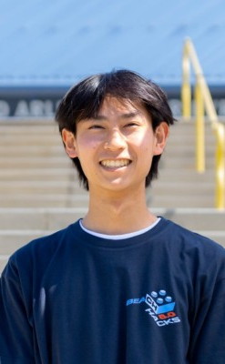
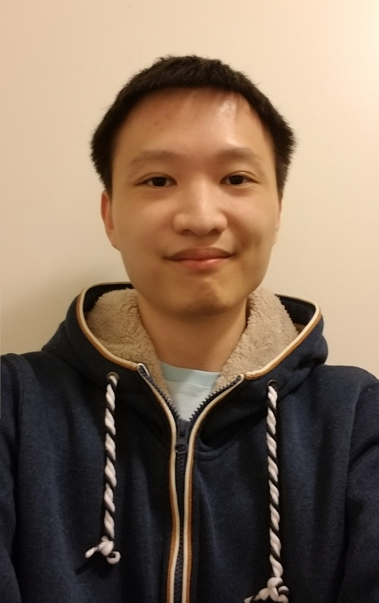
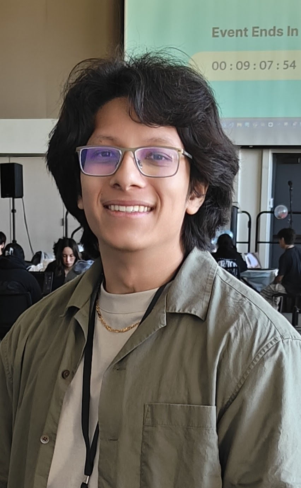
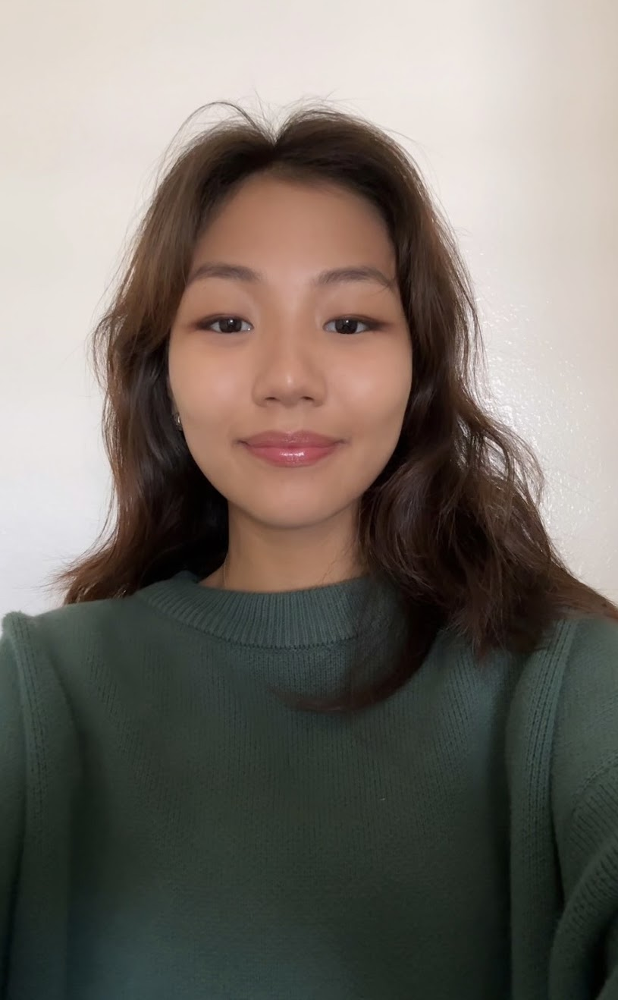
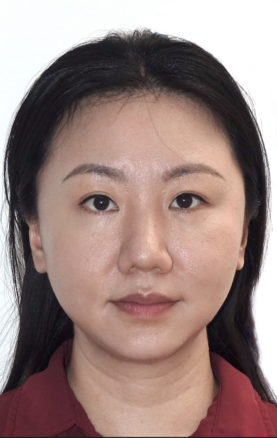

About Me
I am a tenure-track assistant professor in the Department of Computer Engineering & Computer Science at California State University, Long Beach (CSULB), USA. I received my Ph.D. in Computer Science from Florida International University in Summer 2020 (Advisor: Prof. Liting Hu), my M.S. in Computer Science from the University of Toledo in 2016, and my B.S. in Computer Science from North China Electric Power University in 2014.
My research focuses on systems with emphasis on AI, Robots, Deep Learning, Big Data, Cloud, and IoT. I design and implement systems for integrating AI models, human-robot collaboration, efficient distributed deep learning, social streaming data analysis, security and failure recovery in streaming systems, and cloud/edge data processing.
🔥 News
- 2026.02Serve as NSF Panel Reviewer.
- 2026.02SwiftBot paper accepted by CCGrid 2026. Congrats to Simon!
- 2026.02Congrats to Simon receiving the Graduate Travel Fellowship Award from CSULB!
- 2025.12Serve as NSF Panel Reviewer.
- 2025.12One paper accepted at WASP 2025. Congrats to Akash!
- 2025.07One paper accepted at SEET'25.
- 2025.07Received one grant from NSF Data Science Corps. Thank you NSF!
- 2025.03One paper accepted at HumanSys 2025. Congrats to Simon!
- 2025.03One paper accepted at Sensors S&P 2025. 🏆 Best Paper Award
- 2025.03Received the summer stipend award from CSULB ORED.
- 2024.08One paper accepted by Neurocomputing.
- 2024.04Serving as Program Committee for IEEE Big Data 2024.
- 2023.11Serve as NSF Panel Reviewer.
- 2023.02One paper accepted by IEEE Transactions on Parallel and Distributed Systems (TPDS).
- 2023.01One paper accepted by IEEE ACCESS.
- 2022.11Two papers accepted — TransAI 2022 and CLOUD 2022. Congrats to Guanyu!
- 2022.02Received the Faculty Small Grant from CSULB and COE.
📝 Publications
Selected Publications


All Publications
-
CCGrid 2026 — 26th IEEE Intl. Symp. on Cluster, Cloud, and Internet Computing. (Accept Rate: 25%)
-
QCE25 Q-CORE Workshop Track for the IEEE International Conference on Quantum Computing and Engineering (QCE'25).
-
Proceedings of the Third Workshop for Artificial Intelligence for Scientific Publications (WASP 2025).
-
Sensor S&P'25 — Workshop on Security and Privacy of Sensing Systems. 🏆 Best Paper Award
-
HumanSys'25 — Workshop on Human-Centered Sensing, Modeling, and Intelligent Systems.
-
2025 8th International Conference on Robotics, Control and Automation Engineering (RCAE). IEEE, 2025.
-
TechRxiv Preprints, 2025.
-
SEET'25 — Intl. Conference on Software Engineering of Emerging Technologies.
-
arXiv preprint arXiv:2507.10985. 2025
-
Neurocomputing, 2024.
-
arXiv, 2024.
-
IEEE GESS 2024.
-
IEEE Transactions on Parallel and Distributed Systems (TPDS), 2023.
-
Improving CNN-based Stock Trading by Considering Data Heterogeneity and BurstInternational Conference on Data Mining, Big Data and Machine Learning (DBML 2023).
-
IEEE Access, 2023.
-
IEEE Big Data 2023.
-
IEEE Access, vol. 10, pp. 82614–82625, 2022.
-
CLOUD 2022 — International Conference on Cloud Computing.
-
TransAI 2022 — 4th Intl. Conference on Transdisciplinary AI.
-
Case Studies of Configurable Binary Design Library on FPGA25th International Symposium on Measurement and Control in Robotics, 2022.
-
FLOR: A Federated Learning-based Music Recommendation EngineThe 31st International Conference on Computer Communications and Networks (ICCCN 2022). (poster paper)
-
Behavior modeling via cursor movement dataIEEE Rising Stars Poster Competition, 2022. 🏆 People Choice Award
-
CLOUD 2021 — International Conference on Cloud Computing.
-
The Journal of Supercomputing, 2021.
-
Sentiment Analysis of Long-term Social Data during the COVID-19 PandemicThe 22nd International Conference on Internet Computing and Internet of Things, 2021.
-
The 21st ACM/IFIP Middleware Conference (Middleware 2020). (Accept Rate = 25%) [PDF]
-
34th IEEE International Parallel & Distributed Processing Symposium (IPDPS 2020) (Accept Rate: 27.7%). [PDF]
-
2019 International Conference on Cloud Computing (CLOUD 2019). 🏆 Best Student Paper Award [PDF]
-
MCHPC '19: Workshop on Memory Centric High Performance Computing, in conjunction with SC 19, 2019. [PDF]
-
2019 International Congress on Big Data (Big Data Congress), 2019. [PDF]
-
2019 International Conference on Data Intelligence and Security (ICDIS 2019), June 2019. [PDF]
-
2018 IEEE International Conference on Cloud Computing (IEEE CLOUD 2018). (Accept Rate = 20%) [PDF]
-
2018 International Workshop on Big Social Media Data Management and Analysis, in conjunction with IEEE Big Data 2018. [PDF]
-
2018 IEEE International Conference on Cloud Computing (IEEE CLOUD 2018). (Accept Rate = 20%) [PDF]
-
2016 IEEE International Conference on Big Data Analysis (ICBDA). IEEE, 2016. [PDF]
🎖 Honors and Awards
- 2025Best Paper Award, Sensors S&P
- 2024HACU Travel Award, HSI Grant Writing Symposium
- 2022-2024CSULB Research, Scholarship, and Creative Activity Awards
- 2022People Choice Award - IEEE Rising Stars Poster Competition
- 2019Best Student Paper Award - CLOUD 2019
💼 Experience
💼 Education
🎓 Teaching
CSULB — California State University, Long Beach
FIU — Florida International University
UT — University of Toledo
👥 Research Group
I am actively looking for motivated CS/CE master & undergraduate students. Interests: AI systems, multi-robot computing, distributed deep learning, big data processing.
Graduate Students

Undergraduate Students







🏅 Services
NSF Panel Reviewer
- Feb 2026 · Dec 2025 · Nov 2023
Beach Mentor (Advancing Inclusive Mentoring) 2022-2023
- As part of the National Institute of Health's (NIH) Building Infrastructure Leading to Diversity (BUILD), provide a variety of engaging training to promote undergraduate student success.
Applied Data Science Program Coordinator, CSULB, 2023
- Design curriculum and course paths for new introduced Applied Data Science Program at department.
Curriculum & Educational Policies Council, CSULB, 2023-2026
- Serve as the primary advisory body to the Academic Senate and University administration on matters pertaining to the educational policies of the university.
Program Committee
- IEEE Big Data 2023 -- 2026
- ICDCS 2021 — 41st IEEE Intl. Conference on Distributed Computing Systems
- CLOUD 2021 & 2022 — Intl. Conference on Cloud Computing
- CAINE 2021, BCD 2021, ICBDC 2021, Ubicomp CPD 2022 Workshop
- ACM Multimedia 2022 (30th Edition)
Journal Editorial / Review
- Journal of Intelligent & Fuzzy Systems — Associate Editor
- PLOS One — Associate Editor
- Future Generation Computer Systems · Social Network Mining and Analysis
- IEEE Transactions on Cloud Computing · Intl. Journal of Distributed Sensor Networks · ACM TOIT
Other
- Session Chair — IEEE CLOUD 2019 (Session VIII: Cloud Platform Applications)
- Judge — 2022 Riverside County Science and Engineering Fair
✉️ Contact
Long Beach, CA 90840